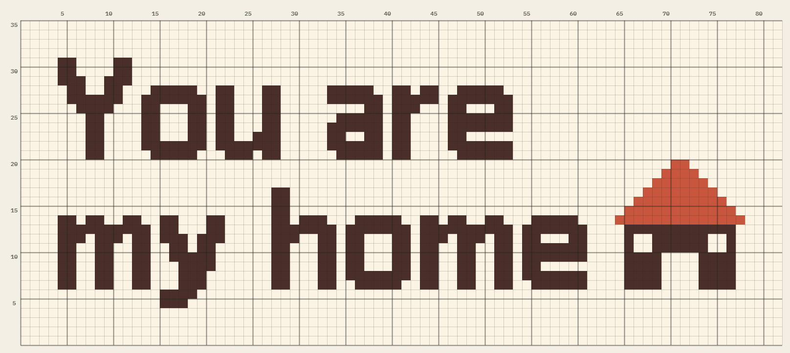
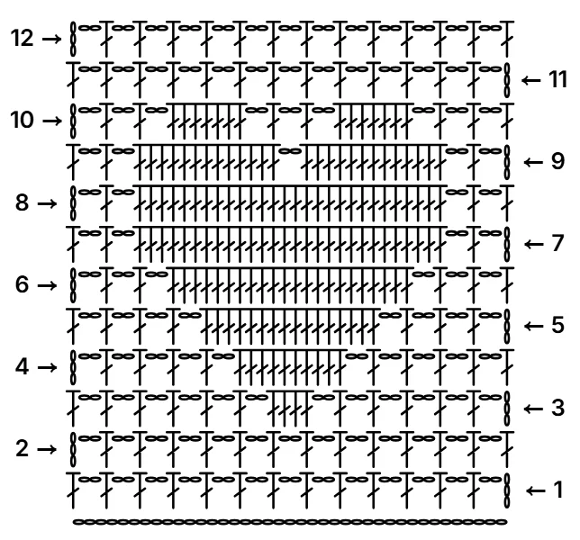

예시 도안
예시 도안 모두 보기 →버튼을 누르면 도안 만들기에서 그대로 열려요. 색이나 글자를 바꿔 내 도안으로 만들어 보세요.

이런 걸 할 수 있어요
문구로 바로 도안
한글·영문 도트 폰트 18종과 손글씨 글꼴. 글자를 쓰는 대로 캔버스에 바로 미리 보여요.

방안뜨기 도안으로 바꾸기
만든 도안을 방안뜨기 기호도, 줄별 설명, 시작 사슬 수로 바꿔 줘요. 사슬 1·2코, 한길·두길긴뜨기.

- 글자 하나씩 배치 물결·통통·오르막으로 틀을 잡고, 알파벳을 하나씩 끌어서 다듬어요.
- 장식과 내 장식 반짝이·하트·꽃 같은 기본 장식에, 직접 그린 장식도 저장해 두고 써요.
- 뜨면서 보기 편하게 작업 단을 테두리로 표시하고, 아래에서부터 1단으로 세요.
- 저장과 공유 이미지로 저장하거나, 도안 파일·링크로 남겨 두고 다시 열어 이어 작업해요.
- 휴대폰에서도 휴대폰·태블릿·컴퓨터 어디서나 같은 화면으로 써요.
자주 묻는 질문
정말 무료인가요? 가입해야 하나요?
네, 모든 기능을 무료로 쓸 수 있고 가입도 필요 없어요. 작업 내용은 내 기기의 브라우저에만 저장돼요.
만든 도안을 판매해도 되나요?
도안은 만든 사람의 것이에요. 도구에 들어 있는 폰트는 모두 상업적 이용이 가능한 무료 폰트라서, 폰트로 만든 글씨 도안을 팔아도 괜찮아요. 다만 캐릭터나 브랜드 로고처럼 다른 사람의 저작물을 담은 도안은 판매하면 안 돼요.
다른 기기에서 이어서 작업할 수 있나요?
도안 만들기에서 저장을 누르면 도안 파일(.json)이 내려받아져요. 다른 기기에서 열기로 그 파일을 열면 그대로 이어서 작업할 수 있어요.
칸 하나가 몇 코인가요?
칸 하나가 짧은뜨기 한 코, 가로 한 줄이 한 단이에요. 실제 크기는 실과 바늘에 따라 달라지니 게이지 재는 법을 참고하세요.